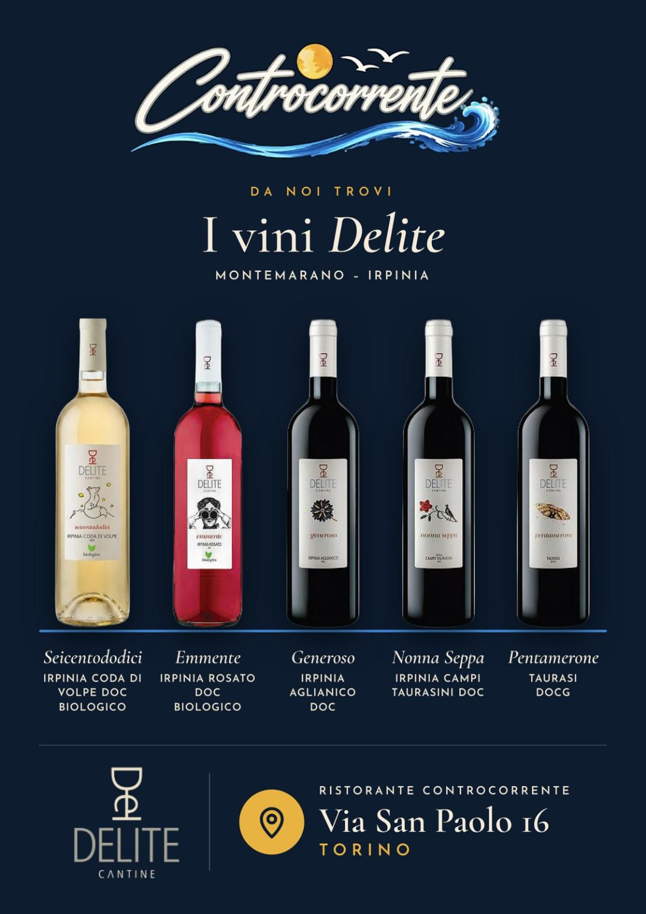

Novità
Meteo di oggi ·
Torino · zona San Paolo
Pranzo12:00–14:30
Previsione non disponibile
Cena19:00–22:30
Previsione non disponibile
Prenotando tavolo e menù di pranzo, entro le 12,
½ litro d’acqua · caffè · coperto sono inclusi
Prenota su WhatsAppPreordina dal menù
½ litro d’acqua · caffè · coperto sono inclusi
Prenota su WhatsAppPreordina dal menù
Attendere la conferma del Ristorante per considerare valido l’ordine.
Prenotando tavolo e menù di cena, entro le 18, il coperto di 1,50 € è omaggio.
Prenota su WhatsAppPreordina dal menù
Prenota su WhatsAppPreordina dal menù
Attendere la conferma del Ristorante per considerare valido l’ordine.
Prova la nuova Chat Commensali
Scambia opinioni, fai due chiacchiere e nuove conoscenze con gli altri commensali del Controcorrente, usando uno pseudonimo.
Entra nella chatAscolta la radio in alta fedeltà
Premi il pulsante della musica ♪ e ascolta gratuitamente la nostra radio in streaming preferita.
CONTROCORRENTE CLUB · MANGI, ACCUMULI, RISPARMI
1 € = 1 punto · 100 punti = 5 € di sconto dalla cena successiva.
Scopri il Club e gli sconti
1 € = 1 punto · 100 punti = 5 € di sconto dalla cena successiva.
Scopri il Club e gli sconti
Accessi al sito
 Browser autorizzati alle notifiche: …
Browser autorizzati alle notifiche: …
QR code del ristorante
